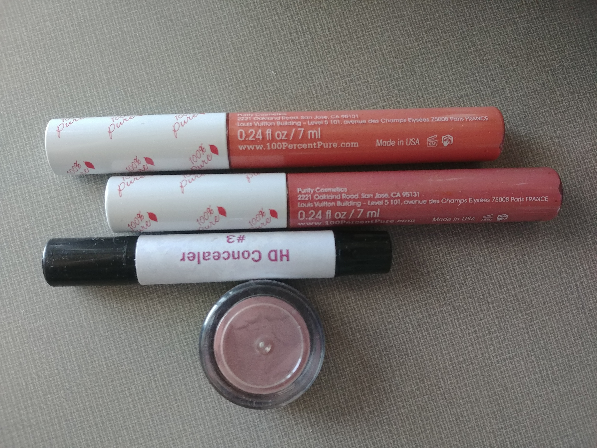
I have a lot of lipgloss. When I have time, I put makeup on in the morning.
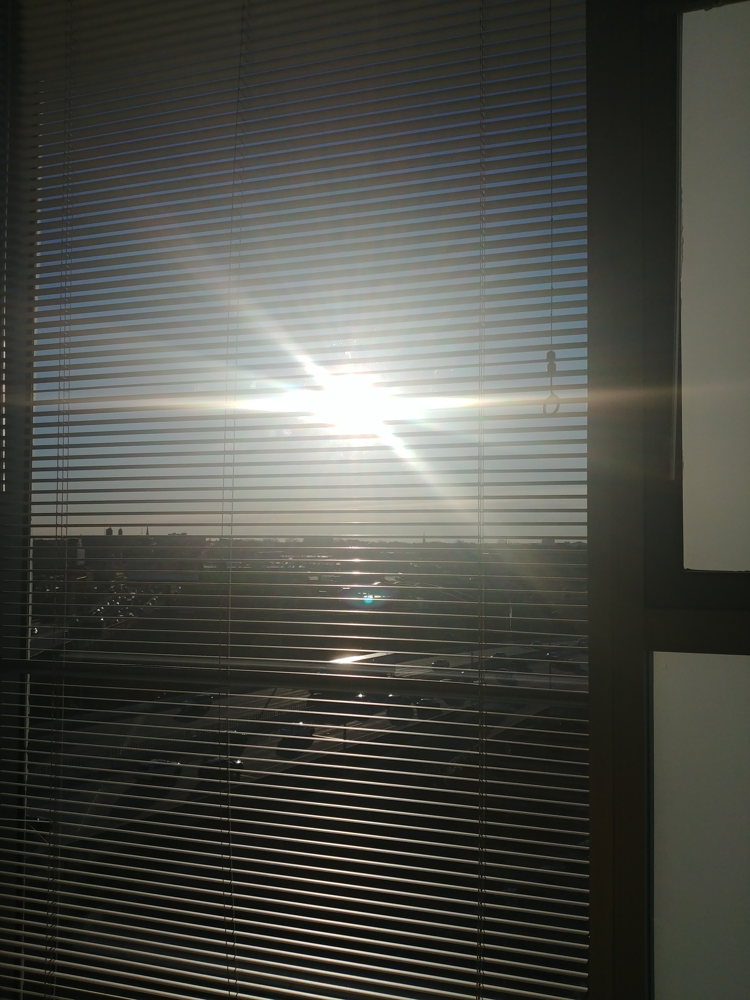
The sun rises outside my window.
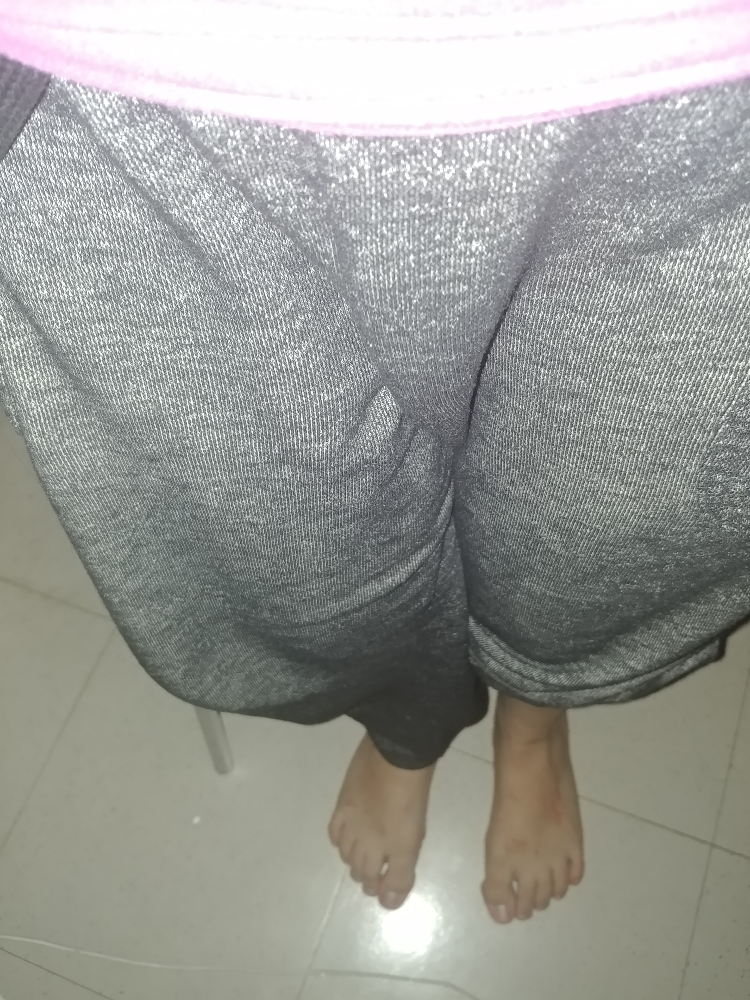
My sweatpants are my favorite indoor pants. They are so comfortable.
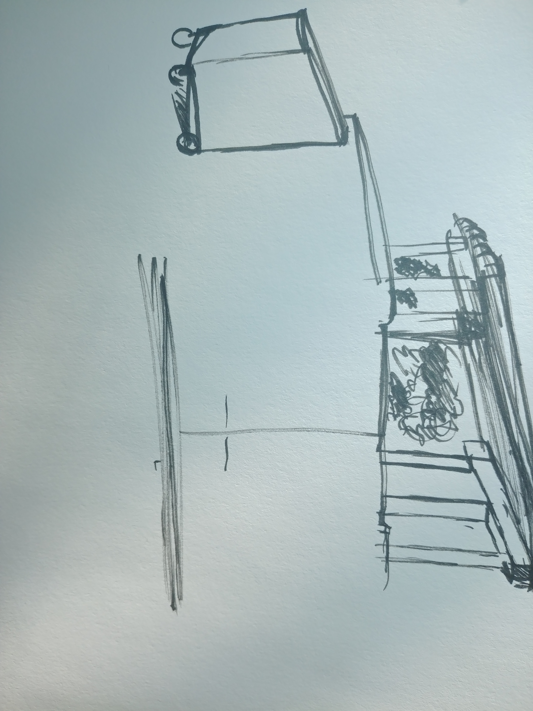
I sketched a building and a dumpster. Outdoor and landscape scenes always defeat me.
I redecorated my bag. The new pins have cats on them.
midday
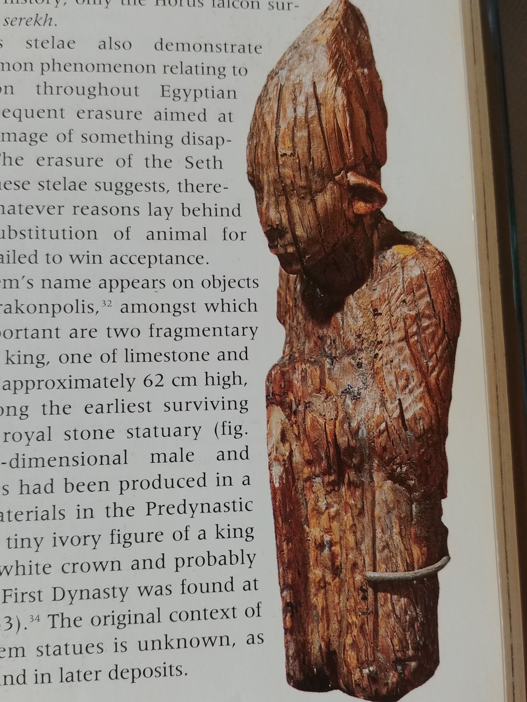
I'm reading about the chronology of Ancient Egyptian sculpture.
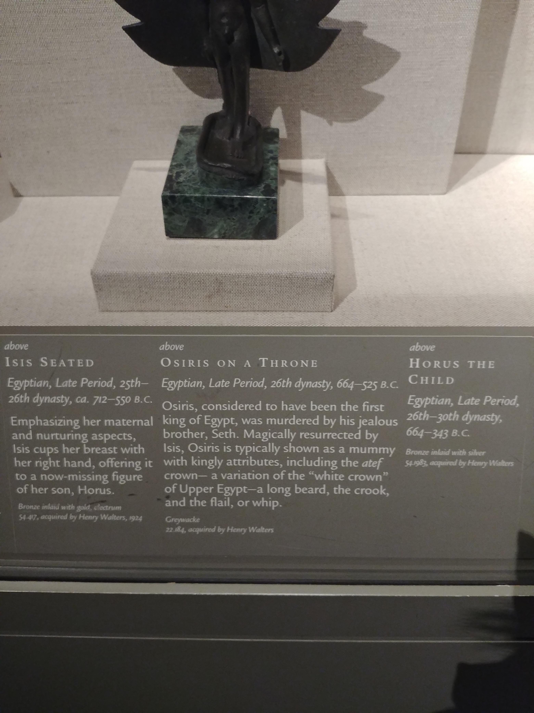
I went to the Walter's Art Museum. The pieces on mythology are my favorite.
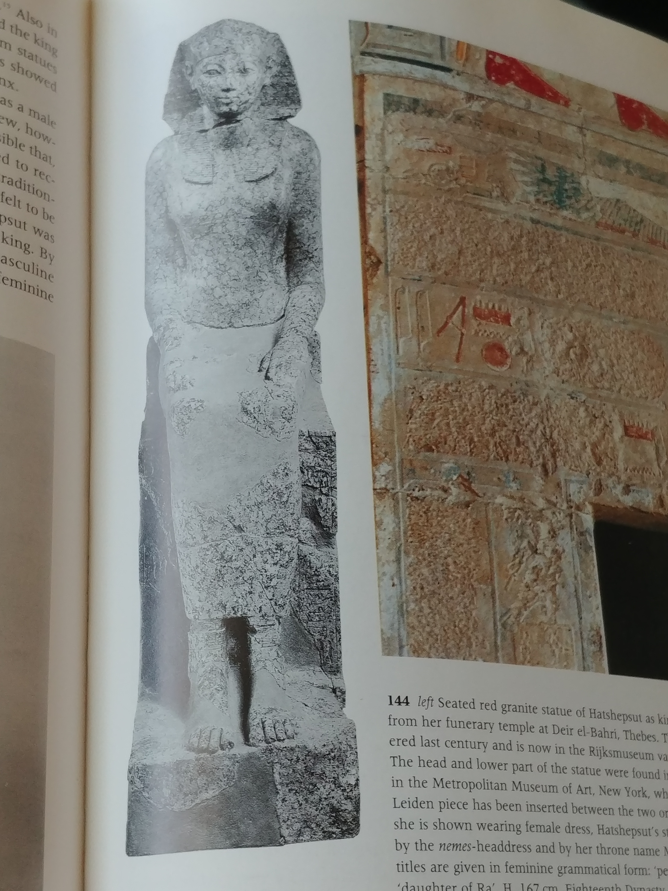
I'm reading another page on Ancient Egypt. I'm fascinated by the pieces this page shows.
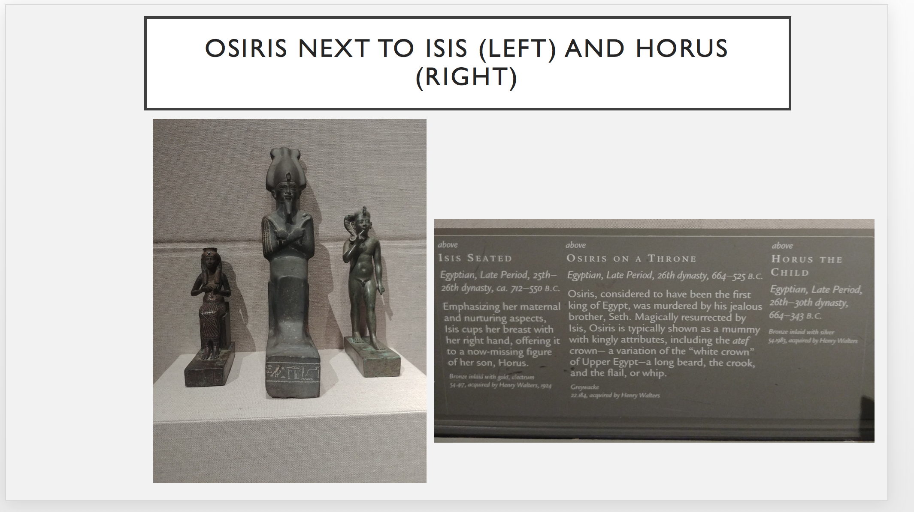
I'm making a Powerpoint presentation on the myth of Osiris. He was an Ancient Egyptian god
who
was
the first king of Egpyt.
He got resurrected and then became king of the underworld. He is mainly associated with
resurrection.
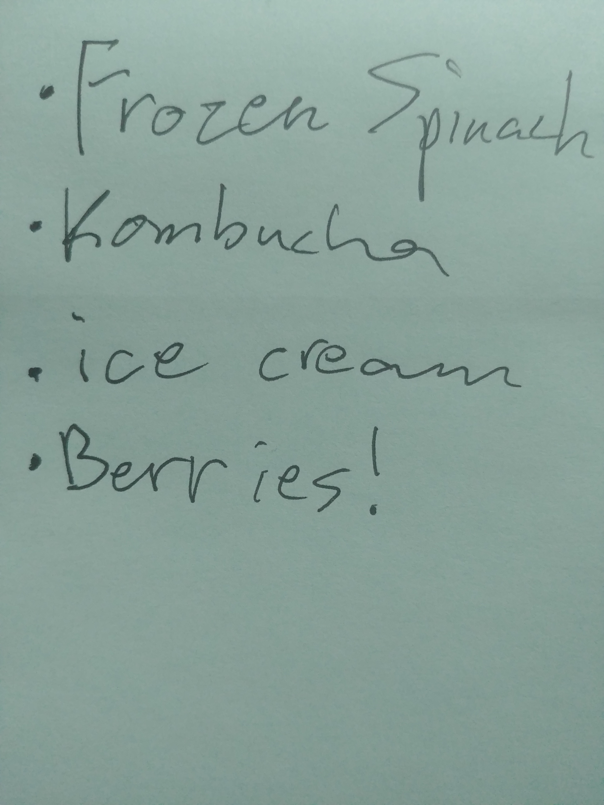
I use mini notepads for my shopping lists. Fruits are pretty expensive,
so I normally end up skipping them when I get to the store.
evening
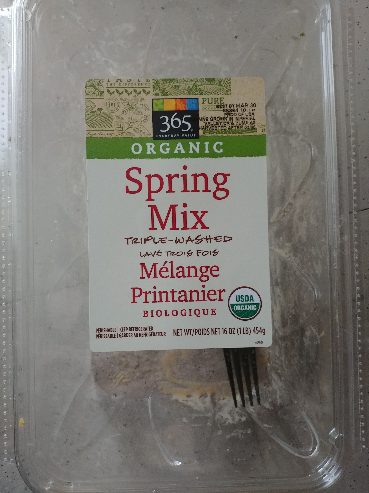
I ate a lot of salad. I hadn't eaten the whole day until this meal.
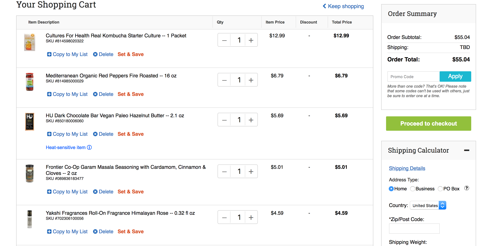
I'm grocery shopping online. There are some good deals.
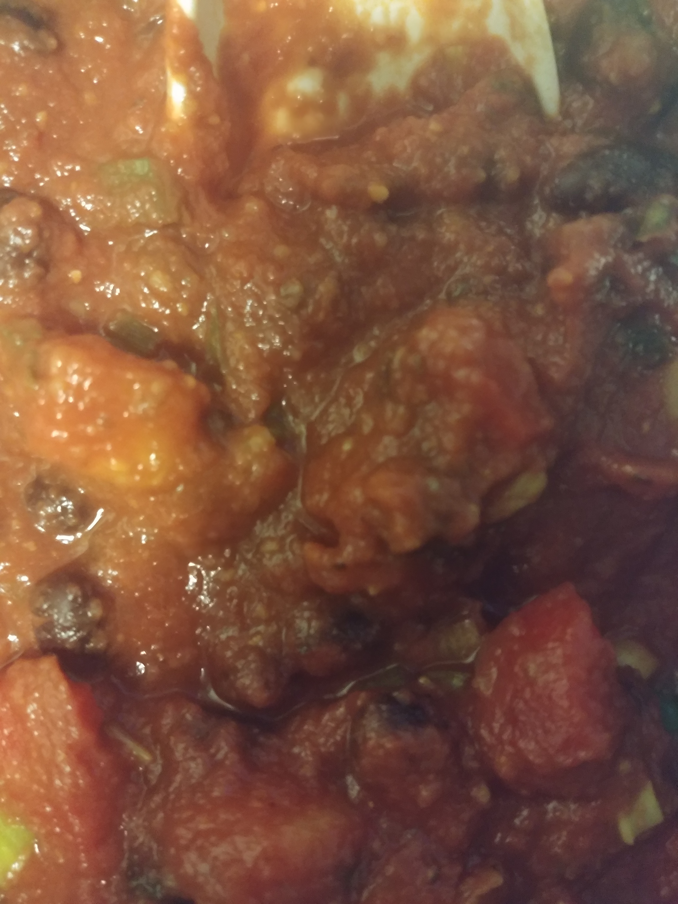
I'm eating tomato sauce with tofu. It's not bad.
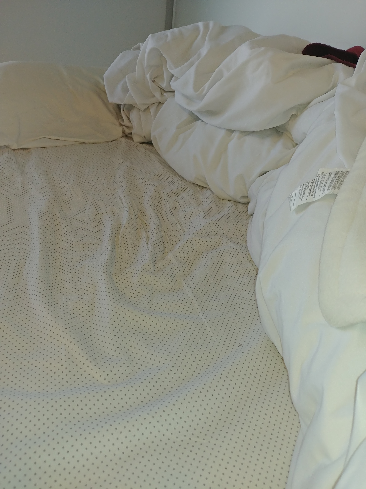
I have flannel sheets. Every night I put essential oils in my hair.